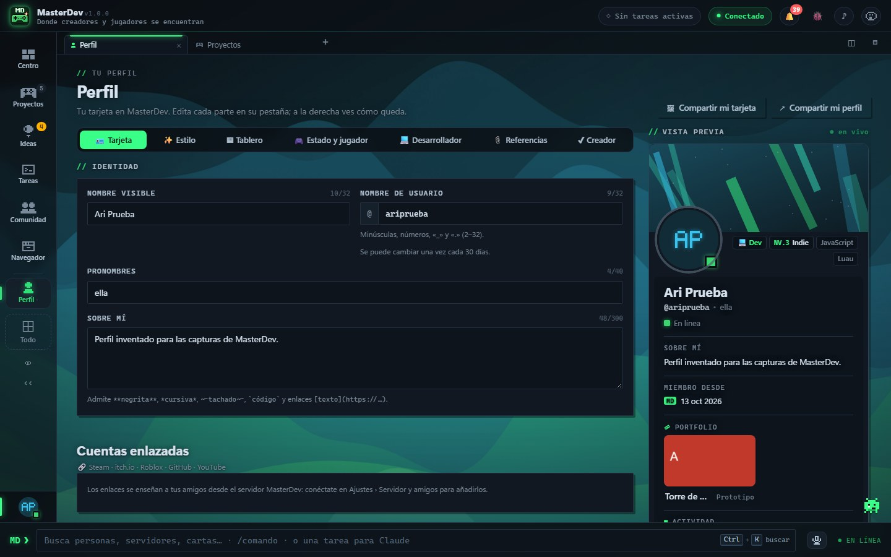

Para jugadores
Juega antes que nadie y deja tu huella
En MasterDev los juegos los hacen personas reales que quieren saber qué opinas. Pruébalos, cuéntales qué pasó y ve cómo cambian con lo que dijiste.
Con un servidor
Descubrir y playtests
- Juegos publicados por desarrolladores reales, con reseñas, etiquetas y playtests abiertos.
- Mientras juegas, marca momentos («aquí me perdí», «esto mola») y responde encuestas cortas.
- Te avisa cuando arreglan el bug que encontraste.
- Compartir cómo jugaste una partida es opcional: lo decides en cada playtest.
«Me quedé atascado en la segunda sala: no vi la palanca.»
Una nota de playtest así es oro para quien hace el juego.
Disponible
Cartas coleccionables
- Sobres de bienvenida y misiones del día y de la semana.
- Completa colecciones y crea las tuyas, también de tu propio juego.
- Los intercambios con otras personas necesitan un servidor.

Disponible
Tu perfil, tus temas, tu música
- Perfil con foto, banner, tablero y tus juegos favoritos.
- 12 temas con fondos animados, o tus propios colores e imagen.
- Mi música, con un modo a pantalla completa y un mini reproductor.

Llamadas: solo red local
Amigos de verdad
- Amigos, mensajes y grupos con imágenes. Siempre personas reales, nunca una IA.
- Servidores con canales, como en las apps de chat que ya conoces.
- Llamadas y compartir pantalla, por ahora dentro de la misma red.
Presencia como en Discord: en línea, ausente, no molestar o invisible, con tu estado.